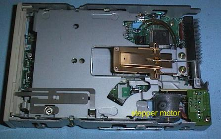
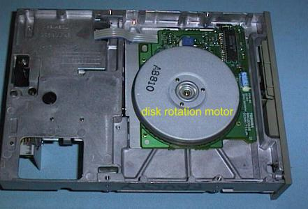
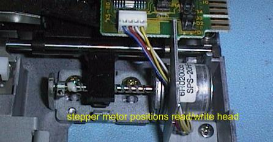
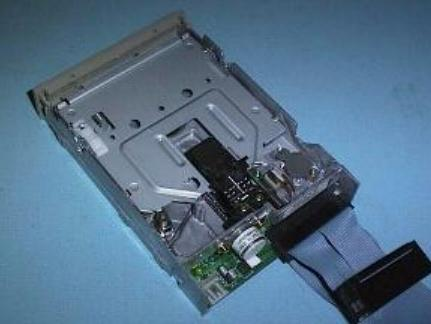
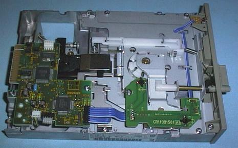
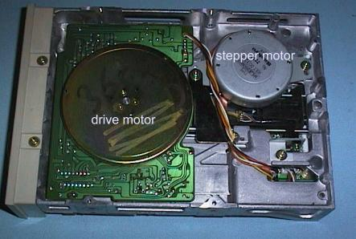
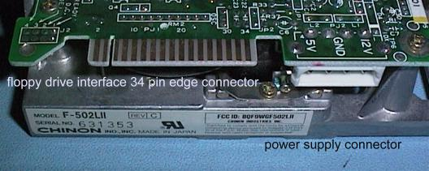
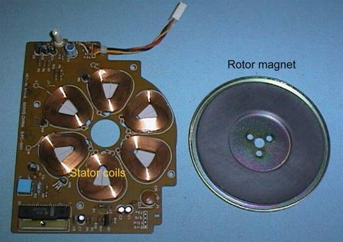
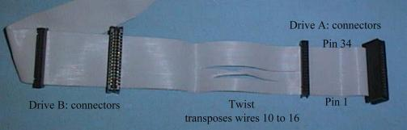

Phil Storrs PC Hardware book
Floppy disk drive hardware
3.5 inch Floppy Disk Drives use a 34 wire header (pin) connector to connect to the Floppy Disk Drive Interface. The power connector is a small four pin device, and modern 3.5 inch drives only use the +5 volt supply.




A 3.5 inch floppy disk drive uses a 34 pin header (pin) connector to the interface
A modern 5.25 inch Floppy Disk Drive uses a direct drive motor to rotate the floppy disk media. 5.25 inch drives use a 34 wire edge connector to connect to the Floppy Disk Drive Interface, and a large 4 pin power connector to supply +5 volt and +12 volt to the drive.




A typical direct drive floppy disk drive motor.
The motor rotates the disk media at a constant speed.
- Normal (Double Density) disks are rotated at 300 RPM
- High Density (Quad Density) disks are rotated at 360 RPM

A floppy disk drive interface cable has a 34 pin header socket on the interface end
- The A: drive connectors are at the other end of the cable and usually have a twist to transpose the wires to pins 10 to 16.
- Most floppy drive cables have both edge connectors (for 5.25 inch drives) and header connectors (for 3.5 inch drives) in both drive positions on the cable.
Copyright © Phil. Storr, last updated 26th December 1998